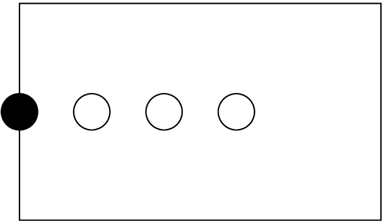
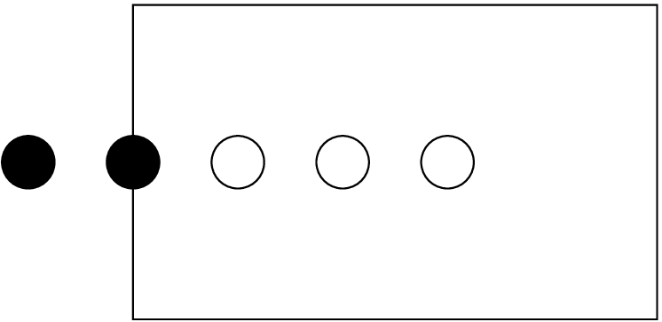
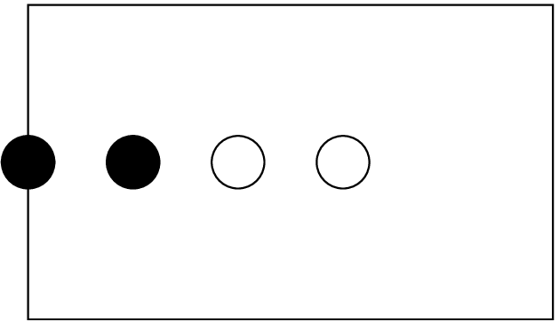
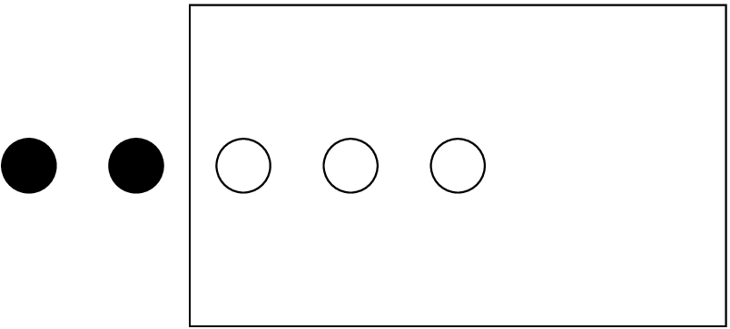
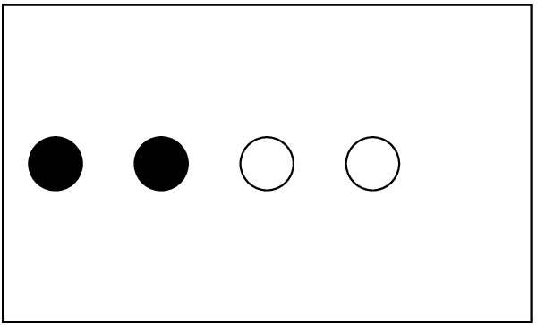
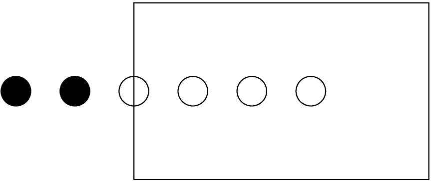

CoordBase provides a mechanism for registering coordinate systems, and maintaining a database of coordinate systems and their coordinates, using key-value tables.
CoordBase also provides a way for specifying the extent of the simulation domain that is independent of the actual coordinate and symmetry thorns, and for specifying the discretisation of the boundary that is independent of the actual boundary thorns.
Many applications which use Cactus will want to make use of coordinate systems. The CoordBase thorn provides a method of registering coordinate systems and their properties. Thorns which implement coordinate systems will register the systems they provide with CoordBase. Since coordinate systems are composed of a collection of coordinates, the coordinates which comprise the systems are registered with CoordBase as well. The data describing coordinate systems are held on Cactus key-value tables. A schema for the format of these tables is provided in section 6. Developers are free to compose and use their own schema, but are encouraged to use the one detailed here, as this will be the standard for all of the core Cactus thorns.
CoordBase specifies an extensible set of coordinate properties. The use of key-value tables to hold these properties makes CoordBase flexible and configurable. The coordinate values themselves can be specified in a number of ways, depending on the nature of the coordinate system. This way symmetries of the coordinates on the computational grid can be exploited to minimize memory consumption. Via a function call, one can easily ascertain what coordinate system is associated with any given grid variable, which is convenient for e.g. I/O. A method of registering default coordinates for all grid variables of a certain dimension makes it simple to specify which coordinate systems should be associated with which grid variables.
The coordinate infrastructure provided by CoordBase will work seamlessly with AMR and multi-model codes.
Thorns which provide coordinates will inherit from CoordBase, and register both the coordinate systems they provide, and the default coordinate systems for the appropriate dimension of grid variables. In addition, one can associate a coordinate with any Cactus grid variable, within a thorn’s interface.ccl. Coordinate systems specified in the interface.ccl override defaults for the dimension.
The coordinate functions in the Cactus flesh are deprecated with the introduction of this thorn. Please use the functions provided here in preference to those in the flesh.
Since computations performed with Cactus are done on a discrete lattice, only a discrete set of coordinate values are used for any coordinate system. The symmetries of how the coordinate values vary on the grid points make coordinates fall into three types: uniform, nonuniform, and warped. (At least these are the three cases that the CoordBase schema considers.) A uniform coordinate varies from each of its neighbors by a constant. i.e. its value can be determined from the index of the grid point from simply an origin and constant ‘delta’. A nonuniform coordinate has a spatially varying ‘delta’. For both uniform and nonuniform coordinates, the coordinate values do not vary along the other directions of the grid. (e.g. the \(x\) coordinate will be the same regardless of the ‘j’ index of the grid point.) Thus one could completely determine the coordinate values of a 3D system of nonuniform coordinates by providing three 1D arrays. This later assumption is relaxed for a warped coordinate; a warped coordinate will vary across the entire grid. Recall that ‘coordinate lines’ (lines of constant coordinate value) cannot cross (because one n-tuple of coordinate values would specify muliple points in space), so this places a ‘bound’ of sorts on the possible ‘warping’ of the coordinates.
The type of a coordinate system will be the same as that of its coordinates. If there are different types of coordinates within the same system, then the coordinate system is mixed. Note that a warped coordinate system is the most general possible, so any coordinate system could be regarded as warped if one wishes.
As mentioned above, for a uniform coordinate system, it is sufficient to specify the origin and spacing for a uniform coordinate. One may also specify a grid variable to hold the coordinate values, if desired. See section 6. A nonuniform coordinate can be specified with a 1D grid variable, if desired, or an nD variable. A warped coordinate system will always need a nD grid variable. FMR and AMR will need an nD grid variable to specify the coordinate values. A mixed coordinate system can use some combination of the above, or simply an nD grid variable.
Generally coordinate thorns will allow the declaration of default coordinate systems for a dimension to be controled by parameters.
If a thorn attempts to register a default for a dimension which already has a default registered, a level 1 warning will result, and the default will be overwritten with the new default. Since the order of execution of the registration calls will in general not be specified, one must be careful when activating more than one coordinate thorn.
Coordinate systems and defaults can be changed at any time throughout a run, as can coordinate properties. In general these are set at CCTK_WRAGH and CCTK_BASEGRID, respectively.
The coordinate thorns are responsible for filling out the portions of the coordinate and coordinate system tables that are not written by the registration routines. See sections 6.1 and 6.2.
Application thorns should check at CCTK_PARAMCHECK to see if the correct coordinate system is being used for each relevant grid variable. While the old flesh API is still being used you may want to make this merely a warning. Use Coord_GroupSystem() to find the coordinate system for groups (see section 5).
CCTK_INT systemhandle = Coord_SystemRegister(CCTK_POINTER_TO_CONST GH, CCTK_INT dim, CCTK_STRING systemname)
registers a coordinate system, along with its dimension, with the CoordBase thorn. This will create a coordinate
system table, and return the handle of the table for success, or a negative error code upon error. The possible
errors are:
| COORDERROR_INVALIDDIM | invalid dimension passed in |
| COORDERROR_INVALIDNAME | invalid name passed in |
| COORDERROR_TABLEERROR | error from key-value or hash tables in flesh |
| COORDERROR_SYSTEMEXISTS | coordinate system of this name already exists |
CCTK_INT systemhandle = Coord_SystemHandle(CCTK_POINTER_TO_CONST GH, CCTK_STRING systemname)
returns the handle for a given coordinate system, or negative on error:
| COORDERROR_TABLEERROR | error from hash table |
| COORDERROR_NOSYSTEM | no coordinate system of this name is registered |
CCTK_INT coordhandle = Coord_CoordRegister(CCTK_POINTER_TO_CONST GH, CCTK_INT systemhandle, CCTK_INT direction, CCTK_STRING coordname)
registers a coordinate within a coordinate system, in the specified ‘direction’. (Direction in this context means
the index in the coordinate basis, which ranges from 1 to the dimension of the system.) Coord_CoordRegister()
returns the coordinate handle, or negative for an error:
| COORDERROR_INVALIDDIM | invalid ‘direction’ |
| COORDERROR_INVALIDHANDLE | invalid handle passed in / coordinate system does not exist |
| COORDERROR_TABLEERROR | error from hash or key-value tables in flesh |
| COORDERROR_COORDINATEEXISTS | coordinate already exists for this ‘direction’ |
| COORDERROR_DUPLICATENAME | coordinate of this name already exists in this system |
CCTK_INT coordhandle = Coord_CoordHandle(CCTK_POINTER_TO_CONST GH, CCTK_STRING coordname, CCTK_STRING systemname)
returns the coordinate handle for a given coordinatate in a coordinate system, or negative on error:
| COORDERROR_NOSYSTEM | no coordinate system of this name is registered |
| COORDERROR_TABLEERROR | error from hash table |
| COORDERROR_NOSUCHCOORD | no coordinate of the name is registered for this system |
int systemhandle = Coord_GroupSystem(const cGH *GH, const char *groupname)
returns the handle for the coordinate system associated with a group of grid variables, or negative on error. This
can either be the default for coordinate systems of this dimension, or the coordinate system that is specified in
the interface.ccl. Coordinate systems specified in interface.ccl will override any defaults. The possible error codes
are:
| COORDERROR_INVALIDGROUPNAME | no such group exists |
| COORDERROR_NOCOORDSYS | no coordinate system is associated with the group |
CCTK_INT systemhandle = Coord_SetDefaultSystem(CCTK_POINTER_TO_CONST GH, CCTK_STRING systemname)
sets this coordinate system to be the default for grid variables of the same dimension. It returns the handle of
the system, or negative for errors:
| COORDERROR_INVALIDNAME | no coordinate system of this name has been registered |
| COORDERROR_NODIMENSION | coordinate system does not have a valid dimension |
| COORDERROR_DEFAULTEXISTS | grid variables of this dimension already have a |
| default coordinate system registered | |
CCTK_INT systemhandle = Coord_GetDefaultSystem(CCTK_POINTER_TO_CONST GH, CCTK_INT dim)
gets the default coordinate system for grid variables of dimension dim (ranging from 1 to the maximum number
of dimensions registered). It returns the handle of the system, or negative for errors:
| COORDERROR_INVALIDDIM | given dimension is invalid |
| COORDERROR_NOSYSTEM | given dimension does not have a default coordinate system associated |
Associated with each coordinate system is a table, which should have the following entries:
| key | data type | value |
| NAME | CCTK_STRING | Cart3d|Spher3d|.... |
| DIMENSION | CCTK_INT | 1,2,3,... |
| TYPE | CCTK_STRING | uniform|nonuniform|warped|mixed |
| COORDINATES | CCTK_INT array | <coord1>,...<coord_dimension> |
Associated with each coordinate of each coordinate system is another table, which should have the following
entries:
| key | data type | values |
| SYSTEM | CCTK_INT | <handle> |
| NAME | CCTK_STRING | x |
| DIRECTION | CCTK_INT | 2 |
| PHYSICALMIN | CCTK_INT | 0 |
| COMPMIN | CCTK_REAL | |
| PHYSICALMAX | CCTK_INT | |
| COMPMAX | CCTK_REAL | |
| TYPE | CCTK_STRING | uniform|non-uniform|warped |
| TIMEDEPENDENT | CCTK_INT | <yes (1)|no (0)> |
| DATATYPE | CCTK_STRING | |
| GAINDEX | CCTK_INT | |
| DELTA1 | CCTK_REAL | 147.372e16 |
Coordinate systems associated with grid variable groups can be specified in the group’s tags table, using the key COORDSYSTEM. Below is a grid array which could represent a vector field on a 2-sphere.
CCTK_REAL SphericalVectorField TYPE=ARRAY DIM=2 TAGS=’COORDSYSTEM="sphere2d" TENSORTYPE="vector"’
{
field_theta, field_phi
}
Even though another thorn has set a default for all 2D grid variables to something else, Coord_GroupSystem() will always return the handle for sphere2d when called on this group.
CoordBase provides a way for specifying the extent of the simulation domain that is independent of the actual coordinate and symmetry thorns. This is necessary because the size of the physical domain is not necessarily the same as the size of the computational grid, which is usually enlarged by symmetry zones and/or boundary zones.
The physical domain is characterised by the location of its lower and upper boundary and by its grid spacing. These quantities are related to the extent and the number of grid cells that span the domain. The relation between the size of the domain and the size of the computational grid is defined in section 8 below. The domain extent as defined in this section is the continuum extent and is independent of the actual discretisation. This makes it possible to adapt the same domain specification for different resolutions by changing only a single parameter.
The domain is specified in one of the following ways, which is selected by the keyword parameter domainsize:
by the location of its lower and upper boundary
by its extent, i.e. its width
by grid spacing and the number of grid cells
The domain specification uses the number of grid cells instead of the number of grid points because the latter can easily lead to one-off errors.
The domain size in each dimension is specificied in equivalent ways. For example, the \(x\)-dimension is specified by a set of some of the following parameters:
When the domain size is specified by extent or by spacing, then the origin (lower boundary) can either be located at \(x=0\), which leads to the domain \(x \in [0,L]\) with the extent \(L\), or the domain can be symmetric with respect to \(x=0\), which leads to \(x \in [-L/2,L/2]\).
When the domain is specified by the location of its lower and upper boundary, then these specify the locations.
When the domain is specified by its extent, then this specifies the extent.
When the domain is specified by grid spacing and the number of grid cells, then these specify the grid spacing and the number of grid cells.
CoordBase also provides a way for specifying the discretisation of the boundary that is independent of the actual boundary thorns. This defines the locations of the boundary points and thus the extent of the computational grid.
Each face of the grid is specified independently. The specification does not depend on the resolution, so that it need not be adapted when the resolution is changed. Figure 1 shows a domain with several interior grid points and one boundary point.

While the physical boundary has a width of zero, the computational grid can have more than one boundary points. This boundary size is defined by the integer parameter boundary_size_x_lower for the lower \(x\) boundary (and similarly for the other boundaries). Figure 2 shows an example where there are two boundary points. When it is necessary to increase the number of boundary points (e.g., to accommodate a larger stencil), then this is the only parameter that needs to be changed.

Depending on the physical setup — and depending on the personal taste — the boundary points should be located either inside or outside of the physical boundary. The boolean parameter boundary_internal_x_lower specifies whether the boundary points extend inwards at the lower \(x\) face. Figure 3 shows the same example, but with internal boundary points.

Depending on the physical setup — and depending on the personal taste — the boundary points should either be staggered about the physical boundary, or the last boundary point should be located exactly on the physical boundary. This is specified by the boolean parameter boundary_staggered_x_lower. Figures 4 and 5 show exampled of external and internal staggered boundary points.


Finally, the integer parameter boundary_shiftout_x_lower can be used to shift the boundary points outwards (or inwards with negative values) by multiples of the grid spacing. Figure 6 shows an example of an exterior, non-staggered boundary with a shiftout of one.

The following table gives examples for common situations:
| Boundary condition | internal? | staggered? | shiftout | example |
| reflection symmetry, not staggered | no | no | 1 | figure 6 |
| reflection symmetry, staggered | no | yes | 0 | figure 4 |
| periodicity, closed boundary | no | no | 1 | figure 6 |
| periodicity, open boundary | no | no | 0 | figure 2 |
| periodicity, staggered boundary | no | yes | 0 | figure 4 |
For other boundary conditions such as Dirichlet or Robin, one can choose these parameters freely.
When iterating over grid points, one usually needs to know about the boundary sizes and boundary types present. One convenient way is provided by the aliased function GetBoundarySizesAndTypes:
CCTK_INT FUNCTION GetBoundarySizesAndTypes (CCTK_POINTER_TO_CONST IN cctkGH, CCTK_INT IN size, CCTK_INT OUT ARRAY bndsize, CCTK_INT OUT ARRAY is_ghostbnd, CCTK_INT OUT ARRAY is_symbnd, CCTK_INT OUT ARRAY is_physbnd)
The input argument size describes the size of the four output arrays as allocated by the caller, and should be 2*cctk_dim. The output of this routine describes, for each of the faces of the domain:
The number of boundary points
Whether this face is a ghost (inter-process) boundary
Whether this face is a symmetry boundary
Whether this face is a physical boundary
When using the CoordBase domain and boundary parameters, the driver (PUGH, Carpet, etc) also needs to be kept informed.
Whichever driver you’re using, if you’re specifying the number of boundary zones using CoordBase, note that
this does not automatically carry over to the driver::ghost_size_x, driver::ghost_size_y, and
driver::ghost_size_z parameters. If you want the ghost sizes to be anything other than their defaults
(currently \(1\)), you need to set them explicitly.
If you’re using PUGH, you must still explicitly set the parameters driver::global_nx, driver::global_ny,
and driver::global_nz. If you don’t set these parameters, PUGH will assume a default \(10 \times 10 \times 10\) grid, which is almost
certainly not what you want!
If you’re using Carpet, things are nice: just set
Carpet::domain_from_coordbase = true
and Carpet will get all its grid information from CoordBase.
| boundary_internal_x_lower | Scope: private | BOOLEAN |
| Description: Do the boundary points extend inwards at the lower x face?
| ||
| Default: no | ||
| boundary_internal_x_upper | Scope: private | BOOLEAN |
| Description: Do the boundary points extend inwards at the upper x face?
| ||
| Default: no | ||
| boundary_internal_y_lower | Scope: private | BOOLEAN |
| Description: Do the boundary points extend inwards at the lower y face?
| ||
| Default: no | ||
| boundary_internal_y_upper | Scope: private | BOOLEAN |
| Description: Do the boundary points extend inwards at the upper y face?
| ||
| Default: no | ||
| boundary_internal_z_lower | Scope: private | BOOLEAN |
| Description: Do the boundary points extend inwards at the lower z face?
| ||
| Default: no | ||
| boundary_internal_z_upper | Scope: private | BOOLEAN |
| Description: Do the boundary points extend inwards at the upper z face?
| ||
| Default: no | ||
| boundary_shiftout_x_lower | Scope: private | INT |
| Description: Offset between the boundary location and the first boundary point at the lower x face
| ||
| Range | Default: (none) | |
| *:* | when not staggered: use 0 for an open, 1 for a closed manifold
| |
| boundary_shiftout_x_upper | Scope: private | INT |
| Description: Offset between the boundary location and the first boundary point at the upper x face
| ||
| Range | Default: (none) | |
| *:* | when not staggered: use 0 for an open, 1 for a closed manifold
| |
| boundary_shiftout_y_lower | Scope: private | INT |
| Description: Offset between the boundary location and the first boundary point at the lower y face
| ||
| Range | Default: (none) | |
| *:* | when not staggered: use 0 for an open, 1 for a closed manifold
| |
| boundary_shiftout_y_upper | Scope: private | INT |
| Description: Offset between the boundary location and the first boundary point at the upper y face
| ||
| Range | Default: (none) | |
| *:* | when not staggered: use 0 for an open, 1 for a closed manifold
| |
| boundary_shiftout_z_lower | Scope: private | INT |
| Description: Offset between the boundary location and the first boundary point at the lower z face
| ||
| Range | Default: (none) | |
| *:* | when not staggered: use 0 for an open, 1 for a closed manifold
| |
| boundary_shiftout_z_upper | Scope: private | INT |
| Description: Offset between the boundary location and the first boundary point at the upper z face
| ||
| Range | Default: (none) | |
| *:* | when not staggered: use 0 for an open, 1 for a closed manifold
| |
| boundary_size_x_lower | Scope: private | INT |
| Description: Boundary zones at the lower x face
| ||
| Range | Default: 1 | |
| 0:* | ||
| boundary_size_x_upper | Scope: private | INT |
| Description: Boundary zones at the upper x face
| ||
| Range | Default: 1 | |
| 0:* | ||
| boundary_size_y_lower | Scope: private | INT |
| Description: Boundary zones at the lower y face
| ||
| Range | Default: 1 | |
| 0:* | ||
| boundary_size_y_upper | Scope: private | INT |
| Description: Boundary zones at the upper y face
| ||
| Range | Default: 1 | |
| 0:* | ||
| boundary_size_z_lower | Scope: private | INT |
| Description: Boundary zones at the lower z face
| ||
| Range | Default: 1 | |
| 0:* | ||
| boundary_size_z_upper | Scope: private | INT |
| Description: Boundary zones at the upper z face
| ||
| Range | Default: 1 | |
| 0:* | ||
| boundary_staggered_x_lower | Scope: private | BOOLEAN |
| Description: Is the boundary is staggered about the grid points at the lower x face?
| ||
| Default: no | ||
| boundary_staggered_x_upper | Scope: private | BOOLEAN |
| Description: Is the boundary is staggered about the grid points at the upper x face?
| ||
| Default: no | ||
| boundary_staggered_y_lower | Scope: private | BOOLEAN |
| Description: Is the boundary is staggered about the grid points at the lower y face?
| ||
| Default: no | ||
| boundary_staggered_y_upper | Scope: private | BOOLEAN |
| Description: Is the boundary is staggered about the grid points at the upper y face?
| ||
| Default: no | ||
| boundary_staggered_z_lower | Scope: private | BOOLEAN |
| Description: Is the boundary is staggered about the grid points at the lower z face?
| ||
| Default: no | ||
| boundary_staggered_z_upper | Scope: private | BOOLEAN |
| Description: Is the boundary is staggered about the grid points at the upper z face?
| ||
| Default: no | ||
| domainsize | Scope: private | KEYWORD |
| Description: Domain size specification
| ||
| Range | Default: minmax | |
| minmax | lower and upper boundary locations
| |
| extent | coordinate extent
| |
| spacing | grid spacing and number of grid cells
| |
| dx | Scope: private | REAL |
| Description: Grid spacing in x direction
| ||
| Range | Default: 1.0 | |
| (0:*) | ||
| dy | Scope: private | REAL |
| Description: Grid spacing in y direction
| ||
| Range | Default: 1.0 | |
| (0:*) | ||
| dz | Scope: private | REAL |
| Description: Grid spacing in z direction
| ||
| Range | Default: 1.0 | |
| (0:*) | ||
| ncells_x | Scope: private | INT |
| Description: Number of grid cells in x direction
| ||
| Range | Default: 1 | |
| 0:* | ||
| ncells_y | Scope: private | INT |
| Description: Number of grid cells in y direction
| ||
| Range | Default: 1 | |
| 0:* | ||
| ncells_z | Scope: private | INT |
| Description: Number of grid cells in z direction
| ||
| Range | Default: 1 | |
| 0:* | ||
| spacing | Scope: private | KEYWORD |
| Description: Grid spacing specification
| ||
| Range | Default: gridspacing | |
| gridspacing | grid spacing
| |
| numcells | number of grid cells
| |
| xextent | Scope: private | REAL |
| Description: Domain extent in x direction
| ||
| Range | Default: 1.0 | |
| (0:*) | ||
| xmax | Scope: private | REAL |
| Description: Location of upper x boundary
| ||
| Range | Default: 1.0 | |
| (*:*) | ||
| xmin | Scope: private | REAL |
| Description: Location of lower x boundary
| ||
| Range | Default: 0.0 | |
| (*:*) | ||
| yextent | Scope: private | REAL |
| Description: Domain extent in y direction
| ||
| Range | Default: 1.0 | |
| (0:*) | ||
| ymax | Scope: private | REAL |
| Description: Location of upper y boundary
| ||
| Range | Default: 1.0 | |
| (*:*) | ||
| ymin | Scope: private | REAL |
| Description: Location of lower y boundary
| ||
| Range | Default: 0.0 | |
| (*:*) | ||
| zero_origin_x | Scope: private | BOOLEAN |
| Description: Is the lower boundary located at x=0?
| ||
| Default: no | ||
| zero_origin_y | Scope: private | BOOLEAN |
| Description: Is the lower boundary located at y=0?
| ||
| Default: no | ||
| zero_origin_z | Scope: private | BOOLEAN |
| Description: Is the lower boundary located at z=0?
| ||
| Default: no | ||
| zextent | Scope: private | REAL |
| Description: Domain extent in z direction
| ||
| Range | Default: 1.0 | |
| (0:*) | ||
| zmax | Scope: private | REAL |
| Description: Location of upper z boundary
| ||
| Range | Default: 1.0 | |
| (*:*) | ||
| zmin | Scope: private | REAL |
| Description: Location of lower z boundary
| ||
| Range | Default: 0.0 | |
| (*:*) | ||
Implements:
coordbase
Adds header:
CoordBase.h
Provides:
Coord_SystemRegister to
Coord_SystemHandle to
Coord_CoordRegister to
Coord_CoordHandle to
Coord_GroupSystem to
Coord_SetDefaultSystem to
Coord_GetDefaultSystem to
GetBoundarySpecification to
GetDomainSpecification to
ConvertFromPhysicalBoundary to
ConvertFromInteriorBoundary to
ConvertFromExteriorBoundary to
GetBoundarySizesAndTypes to
This section lists all the variables which are assigned storage by thorn CactusBase/CoordBase. Storage can either last for the duration of the run (Always means that if this thorn is activated storage will be assigned, Conditional means that if this thorn is activated storage will be assigned for the duration of the run if some condition is met), or can be turned on for the duration of a schedule function.
NONE
CCTK_STARTUP
coordbase_startup
register a gh extension to store the coordinate system handles
| Language: | c | |
| Type: | function | |